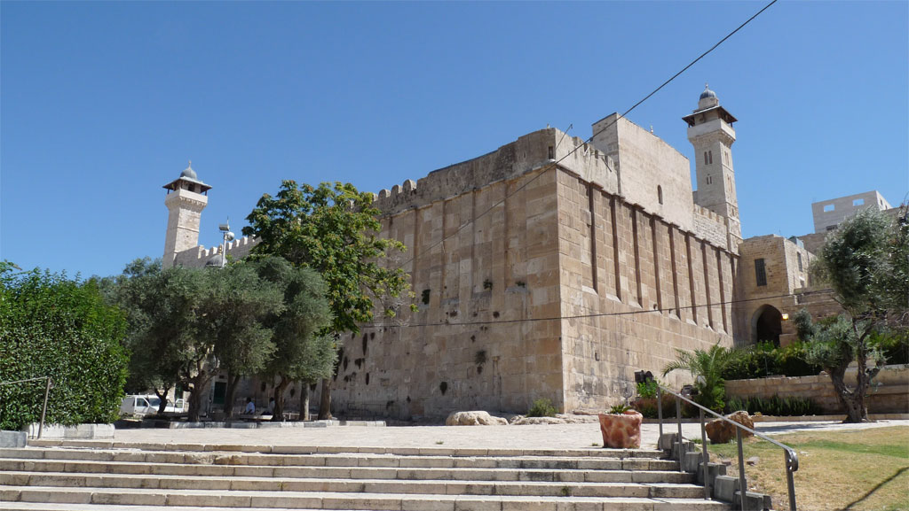
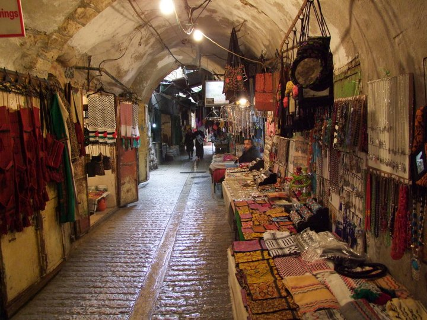
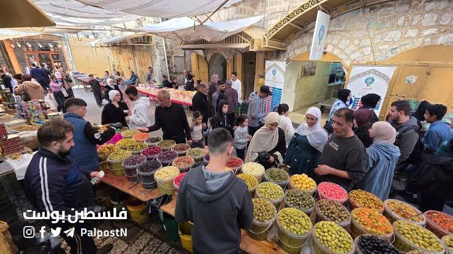
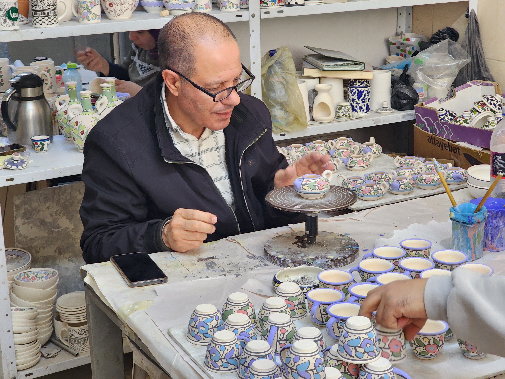

يقع الحرم الإبراهيمي الشريف (المعروف عند اليهود باسم مغارة المكفيلة أو كهف البطاركة) في البلدة القديمة بمدينة الخليل جنوب الضفة الغربية في فلسطين. يُعتبر من أقدم الأماكن المقدسة المستخدمة في العالم بلا انقطاع تقريباً، ويحتل المرتبة الرابعة في الأهمية لدى المسلمين والثانية لدى اليهود.

تُعدّ البلدة القديمة في مدينة الخليل لوحةً تاريخيةً حيّة تفوح بعبق الماضي وأصالة التراث الفلسطيني الإنساني. تتميز العمارة فيها بطابعها المملوكي والعثماني الفريد، حيث تتراصّ البيوت الحجرية القديمة، وتتشابك الأزقة الضيقة والمسقوفة بالأنفاق العقدية التي كانت تحمي المارة من تقلبات الطقس قديماً. وينبض قلب البلدة بالحياة بفضل أسواقها التقليدية العريقة، مثل سوق اللبن وسوق الإسكافية، التي تعج بمحلات الحرف اليدوية كصناعة الفخار، والزجاج الملون، والدباغة.
أقرأ المزيد حول البلدة
تتميز أسواق مدينة الخليل العريقة، وخاصة في بلدتها القديمة، بأجوائها التراثية الساحرة ونبضها الحي الممتد عبر القرون، حيث تشكل هذه الأسواق لوحة دمشقية معمارية فريدة بأسقفها المقوسة وممراتها الضيقة الملتوية. تفوح في أزقتها روائح التوابل والبهارات الذكية، وتزدان جنباتها بمحلات السيراميك الملون، والخزف اليدوي، والزجاج الخليلي الشهير بنقوشه الإبداعية، إلى جانب محلات دباغة الجلود وصناعة الأحذية التي لطالما تميزت بها المدينة.
مُدة الزيارة:12 ساعة.
تُعد صناعة الزجاج والخزف في البلدة القديمة بمدينة الخليل واحدةً من أقدم الحرف اليدوية التراثية في فلسطين، حيث تعود جذورها التاريخية إلى مئات السنين (ترتبط في بعض أصولها بالفترات الرومانية أو الكنعانية)، وتتركز بشكل خاص في "حارة القزازين" التي سميت بهذا الاسم نسبةً إلى صُنّاع الزجاج والحرفيين الذين استوطنوها وعملوا فيها. مُدة الزيارة: ساعة واحدة